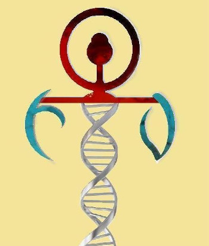

Альтернативное мышление – Вампирский Ретровирус
Одна из вещей, которые всегда отмечают «сообщество» или субкультуру – это распостранение теорий о происхождении современного вампира. Есть те, кто поддерживает теорию, что это медицинское состояние, есть те, кто думает, что это метафизическое состояние или влияние, а третьи полагают, что это «духовное» состояние, что бы под этим понятием не подразумевалось. Единственное, что ВСЕ теории и убеждения имеют общего, без обиняков, это то, что нет абсолютно никаких доказательств какой-либо из теорий. Тогда мы оказываемся в ситуации, когда, независимо от теории, определяющим фактором является то, как много косвенных доказательств есть для ее подтверждения, или насколько она возможна.
В мире существуют буквально сотни тысяч теорий для сотен тысяч вещей: медицинские теории, бизнес-теории, социальные и психологические теории, и субкультура реальных вампиров ничем не отличается от них. Есть гипотезы насчет всего, что происходит с вампирами, есть теории о том, почему кровь делает некоторых счастливыми и здоровыми, есть теории, почему некоторые из них могут поглощать или «глотать» энергию и испытать тот же эффект, есть книги, Библии, свитки, пособия и руководства; и все они имеют одну общую черту: то, что не существует доказательств того, что какая-либо из них верна.
Когда мы сталкиваемся с теориями, идеями, концепциями, отличающимися от наших собственных, которые нередко ревностно защищают, возникает мгновенная реакция – «смешать с грязью» это и автора как можно быстрее, почему так? Потому что нас вытащили из «зоны комфорта» в темное место, и может понадобиться изменение некоторых наших заветных идей.
В процессе чтения данной статьи об «альтернативном мышлении», от вас, читатель, потребуется соблюдение нескольких правил. Во-первых, требуется приостановка недоверия, возможно, вы слышали об этом или затрагивали в разговорах понятную тему, но если вы будете читать с предвзятым мнением, тогда весь процесс чтения будет окрашен этим. Во-вторых, читатель ДОЛЖЕН быть непредубежденным и готовым исследовать новые и различные идеи беспристрастно, замечать мысли, которые поддерживают идею, и снимать со счетов нелогичные. Если вы, читатель, готовы приблизиться к предмету чтения, соблюдая эти правила, тогда вы обнаружите, что сможете воспользоваться информацией или извлечь из нее выгоду. Однако, если вы будете высокомерным, нетерпимым и узколобым человеком, тогда вы не извлечете никакой пользы из прочитанного.
Вампирский Ретровирус
Одна теория о современном живом вампире, которая имеет рост числа последователей за последние три года или около того - это теория «Вампирского Ретровируса».
В сериях «Альтернативного Мышления» мы собираемся рассмотреть менее популярные «системы взглядов», которые имеют место в VC/OVC. Чтобы полностью понять, что же эта теория влечет за собой, мы должны сначала сформулировать определение термина «Вампирский Ретровирус».
Ретровирус – это: «любое семейство одноцепочечных вирусов РНК, имеющих винтовую оболочку и содержащих фермент, который допускает аннулирование генетической копии, от РНК до ДНК, а не обычной ДНК к РНК; недавно расшифрованная вирусная ДНК, включаемая в нить ДНК клетки - хозяина для производства новых ретровирусов РНК: семья включает вирус СПИДа и определенные вирусы, несущие онкоген и вовлеченные в различные раковые образования».
Происхождение: 1975–80; ретро - + вирус “[1]
Или, в немного более простой форме:
«любой из нескольких вирусов, генетическая спецификация которых закодирована в РНК, а не ДНК и которые в состоянии полностью изменить нормальный поток генетической информации от ДНК до РНК, расшифровывая РНК в ДНК: много ретровирусов, как известно, вызывают рак у животных».
Вкратце, это модификация нормального процесса для передачи информации о ДНК в последовательные поколения семьи. Один комментатор недавно полагал, «нет такого ретровируса, изменяющего ДНК, который мог бы так влиять на человеческое тело». В то время, как я согласился бы, что нет такого ретровируса, который может изменить человека в сверхъестественного вампира с супер-способностями, я не пошел бы на то, чтобы сделать это непререкаемым фактом, и при этом я не стремился бы применить его к любому человеку в частности.
Причина, по которой я бы так не поступал, объясняется, например, последними официальными выпуками из проекта генома человека. Когда мы обращаемся к «Состоянию завершения», мы находим, как разъяснено в Википедии, следующую информацию:
«Состояние завершения: Проект Генома Человека был объявлен завершенным в апреле 2003. Первоначальный черновой набросок генома человека был доступен в июне 2000, и к февралю 2001 рабочий проект был закончен и издан, сопровождаемый заключительным упорядочивающим отображением генома человека, 14 апреля 2003. Хотя это, как сообщили, 99% генома человека с точностью до 99.99%, главная качественная оценка последовательности генома человека была издана в мае 27 2004, с указанием на более чем 92% выборки превышенной точности на 99.99%, которая допускается в пределах намеченной цели. [1] Дальнейшие исследования и отзывы о ПГЧ продолжаются. [2]».
Refs:
[1] Nature 429, 365-368
[2] http://www.ornl.gov/sci/techresources/Human_Genome/project/journals/journals.shtml
Проект Генома Человека (ПГЧ)
Таким образом, на 27 мая 2004 все еще оставались 8% выборки, которые не были упорядочны. Другой существующий ныне факт то, что ДНК каждого человека уникальна.
Как сообщается:
«“Геном” любого человека (за исключением идентичных близнецов и клонированных организмов) уникален; отображение “генома человека” включает упорядочивающие многократные изменения каждого гена. [**] проект не изучал всю ДНК, найденную в клетках человека; некоторые heterochromatic (http://en.wikipedia.org/wiki/Heterochromatin) области (приблизительно 8% полного генома) остаются неупорядоченными”.
** Хармон, Кэтрин (2010-06-28). “Геном, упорядочивающий для остальной части нас”. Научный американец. Восстановленный 2010-08-13.
” Ключевые результаты проекта (2001) и полный (2004) последовательности генома включают следующие тезисы:
1. Есть приблизительно 23,000 генов в людях, такой же диапазон, как у мышей и круглых червей. Понимание того, как эти гены самовыражаются, даст представления о том, чем вызваны болезни.
2. У генома человека есть значительно больше сегментальных дублирований (почти идентичные, повторные разделы ДНК), чем у геномов других млекопитающих. Эти секции могут лежать в основе создания новых, определенных для примата, генов.
3. В то время, когда последовательность набора была принята меньше, чем 7% семей белка, которые оказались необычными для позвоночных [3b]
Так, с научной точки зрения, у нас ещё есть мера генома, которая "непоследовательна", это неизвестное количество в уравнении, и пока мы не знаем этой "неизвестной", мы не можем заявить, что геном, ДНК или любой другой компонент системы делает и что не делает, в частности. Стоит также отметить, что в Проекте по Расшифровке Генома человека задействовано отображение образцов, взятых из выбранной группы/групп; таким образом, мы можем сделать вывод, что результаты 92% отображаются с точностью 99,99% и могут быть применены только к этому образцу.
Как работает теория Вампирского Ретровируса?
Наука о материи конкретизируется, насколько это возможно, и на данном этапе теория "Ретровируса" имеет такой же вес, как и любая другая теория о происхождении современного вампира. Когда я решил вникнуть в это, я знал, что не смогу без гида, человека, который был бы хорошо знаком с концепцией и смог бы представить ее в понятном виде; и Izidari и Danica пришли на помощь. Я попросил их обеспечить меня, как обывателя, информацией о теории "Ретровируса".
Izidari написала:
"Я полагаю, что должна начать с базы, откуда берутся наши убеждения. Как вы знаете, Чарльз Дарвин - создатель теории эволюции, а так же, естественного отбора. Обе эти теории играют большую роль в отношении веры в ретровирус. Есть ряд ретровирусов, характерных только для человека, при этом они расходятся с показателями для шимпанзе, и мы считаем, что одна из цепей ретровирусов (так как не все из них были обнаружены или полностью изучены) является тем, что делает нас вампирами. Как работает этот ретровирус? В принципе, в катализаторе полового созревания (17-24 с некоторой разбежкой) этот ретровирус активизируется с помощью конкретного гормона или определённого его уровня. В первую очередь, это зависит от того, есть у человека ретровирус или нет (он является выборочным, т.к. связан с генетической передачей). Для того, чтобы иметь ретровирус, по крайней мере, один из родителей должен обладать им (в моём случае, это моя мать). Мы не уверены, является ли этот ген доминирующим или рецессивным, но склонны думать, что он рецессивный.
В любом случае, время активизации ретровируса известно как Пробуждение. В это время симпатическая нервная система работает как раньше, но с более низкой скоростью. Это означает, что быть вампиром - значит, находиться в состоянии "борьбы или бегства", но не настолько сильном, чтобы можно было бы убить человека. Ряд вещей происходит в течение этого времени; повышенная чувствительность будучи сильной, ещё усилится, увеличится скорость мышления и т.д. Опять же, это несравнимо с человеком в нормальном состоянии "борьбы или бегства", потому что ни один человек не мог бы оставаться в этом состоянии продолжительное время из-за риска наступления смерти. Если вы примите человека (вампиры - люди, но ради дискуссии я буду выделять их) в состоянии "борьбы или бегства" за 100%, а нормальное человеческое тело за 0%, вампир будет находиться в пределах 50%. Когда в теле активна симпатическая нервная система, кровь немного отходит от таких мест, как кожа (что приводит к бледности), пищеварительная и иммунная системы (что является причиной, почему вампиры, которые питаются, не часто болеют). Из-за этого кровь перемещается более активно в таких местах, как центральная нервная система (поэтому мы более чувствительны к раздражителям), сердце и т.д.
У нас быстрее сердечный ритм (не смехотворно быстрый), немного ниже температура тела (поэтому мы можем в холодный день, скажем, 50*F, обойтись лёгкой курткой) и поверхностное дыхание.
Так, поскольку кровь необходима в таких местах, как иммунная система, кожа и т.д., мы должны пить ее, чтобы она текла там, где должна. Наша гипотеза заключается в том, что из-за естественного отбора первоначально людям/вампирам был нужен способ перемещения крови в место, где она должна была быть, поэтому возникла усовершенствованная пищеварительная система (а именно, пищевод). Мы считаем, что из-за этого кровь, которую мы пьем, передаётся к местам, где она необходима, способом, похожим на тот, каким питательные вещества перемещаются по всему телу. Потому что люди всегда развиваются, чтобы стать более "умелыми", почему же наличие ретровируса не сделало бы нас более "эффективными" в этом случае? Если бы мы не чувствувовали себя физически лучше после того, как выпьем крови (не просто каплю или две но, например, стакан), то не смогли бы выдвинуть на рассмотрение эту гипотезу."
Другая наша гостья в этот вечер, Danica, написала:
"Izidari удивительна в объяснении этого, так что я, отвечая, приму во внимание отрывок из её книги".
"Возникновение Реальных Вампиров вызвано ретровирусом, который интегрировал себя в ДНК человека во время зачатия или в связи с передачей крови от реального вампира. Эта интеграция заставляет организм пройти через то, что реальные вампиры называют Пробуждением, при котором физическая реализация черт вызвана этим ретровирусом. Если реальный вампир рожден таковым, Пробуждение произойдёт не раньше пика полового созревания, когда гормоны, чтобы стать активными, вызывают ретровирус. Каждая черта сформируется в течение определённого периода времени (как правило, в течение года), пока индивид не будет полностью Пробужден." - "Правда: Реальные Вампиры", глава 3: "Что такое Реальный вампир".
Эти слова оставили меня с рядом вопросов, в поиске ответа на которые мне пришлось прочесть довольно много информации и правильно сформулировать ее. Вооруженный моими запросами и показаниями, я вновь пригласил Izidari и Danica принять участие в рассмотрении возникших у меня вопросов и в поиске ответа на них.
RVL: Добрый вечер. Спасибо, что не пожалели немного своего времени и присоединились к нам для обсуждения этого вопроса.
Izidari: Спасибо за приглашение. Я очень рада быть здесь.
Danica: Большое спасибо за возможность поделиться с вами нашими историями.
RVL: В первую очередь мы хотели бы, если можно, получить представление о том, как вы определяете себя в контексте современного вампирского "сообщества", к какому типу вы себя относительно и как давно знаете о своей истинной природе.
Izidari: Я то, что вы назвали бы вампиром с Ретровирусом; я знаю о своей природе примерно в течение пяти лет. Прошла через пробуждение за две недели до 17-тилетия (сейчас мне почти 21), но я родилась вампиром.
Danica: Для нас существует только один тип вампира, и это то, что некоторые называют "вампиром Сангвинаром", подразумевая, что мы потребляем кровь. Есть те, кто утверждает, что существуют вампиры, употребляющие энергию, так называемые "психические вампиры", но, по моему убеждению, они являются энергетическими манипуляторами - не вампирами. Чтобы быть вампиром, вы должны употреблять кровь, и мы делаем это из-за нужды в крови - а не в энергии.
Я пробудилась рано, в 13 (это было 18 лет назад). Мне посчастливилось иметь друзей на несколько лет старше, они знали признаки и помогли мне пройти через это.
RVL: Вы утверждаете, что ретровирус существует в "нитях", позволяет ли это предположить, что сам вирус образует часть ДНК сопутствующего родителя, а не находится в нормальной для вируса форме, как гепатит, например?
Izidari: Точно. Это генетическая "мутация", если хотите. Опять же, это вызывает низкий уровень “борьбы или бегства” через симпатическую нервную систему, и в основном, для нас, парасимпатическая нервная система никогда не закрывает прежнего. Ретровирус является “ДНК” в любом случае, так что нити - это просто подкатегории этого РЧЭ (Ретровирусы Человека Эндогенного). Вот почему в пределах нашего сообщества мы немного “принимаем в штыки” гипотезу об обращении.
RVL: От многих вирусов, существовавших до сих пор и существующих сегодня, есть способ исцеления. Считаете ли Вы, что ретровирус может быть вылечен?
Izidari: Мы не используем термин “sanguinarian”, поскольку все реальные вампиры, веря в это, пьют кровь, поэтому мы не должны группировать отличающихся людей. В принципе, вы или являетесь вампиром, или нет. Причина состоит в том, что, как я объясняла выше, ретровирус - это из разряда физиологии, и поэтому, чтобы утолить физический недуг, вы должны заботиться о “хлебе насущном”.
Danica: Если говорить о вампиризме, существует только один тип - и именно это другие называют пьющими кровь или “Сангвинарами”. Ретровирус дает нам физическую потребность в крови.
RVL: Вы предполагаете, что во время “пробуждения” вампира симпатическая нервная система взбудоражена, и успокоена, при низкой постоянной; хотя при этом возникают эффекты папиллярного расширения и ускорения сердечного ритма? Что вы можете сказать относительно негативного воздействия на пищеварительную систему и, в частности, на надпочечники? Как вы думаете, с какими проблемами сталкивается современный реальный вампир?
Izidari: Поскольку надпочечники находятся в напряжении в момент стресса, вампиры должны компенсировать это посредством других методов (например, с помощью дыхательных техник). Я знаю, что быстро утомляюсь, но, поскольку ознакомлена с психилогическими приемами, я знаю методы, при помощи которых можно попытаться справиться с этим. Это то самое, почему, когда вампир пытается превратить кого-то в себе подобного и, если у него есть склонность к депрессии или насилию, превращение фактически работает.
Danica: Головные боли являются главным фактором во всем этом. Особенно мигрени. Мы становимся более чувствительны к теплу - поскольку наша температура тела на один или два градуса ниже, чем у обычных людей.
RVL: Каковы психологические признаки вампира, являющегося продуктом ретровируса?
Izidari: Тут нет психологического клейма, если действительно считать, что это относится к психологии, что это - физиологическая вещь. Если бы я, опираясь на мой ответ выше, сказала, что проблема возникла из-за неспособности совладать со стрессом, я бы судила не объективно, поскольку многим людям трудно справиться с ним. Вы можете больше узнать о признаках, если заглянете в мой блог и на сайт, ссылку на который я дала ниже.
Danica: Когда начинается пробуждение, вы можете почувствовать, что не имеете никакого контроля над тем, что происходит с вашим телом. Это, в сочетании с половым созреванием, может заставить вас почувствовать себя вышедшим из-под контроля и сконфузить.
RVL: Как вы считаете, почему теория ретровируса не так широко распространена, в отличие от многих других теорий эволюции и существования вампиров?
Izidari: Ну, во-первых, эта концепция очень сложна для понимания. Кроме того, она скорее избирательна, поэтому многие, по-нашему определению, не являются вампирами, и это удерживает людей. Мы рады всем: и людям, и вампирам, - но я считаю, что поскольку наши черты настолько специфичны, очень немногие люди подходят под категорию “вампирского ретровируса”, поэтому мало людей, которые стремятся примерить на себя образ вампира, приходит к нам. Мы приветливы, но не терпим, когда люди ведут себя как ролевики. Кроме того, мы делаем все возможное, чтобы остановить их деятельность в нашем сообществе и уменьшить их количество, насколько это возможно.
Danica: Я считаю, это происходит потому, что люди убеждены в том, что психические вампиры существуют, в то время, как это не соответствует действительности. Энергетические манипуляторы не затронуты ретровирусом, они просто в состоянии управлять энергией вокруг них, и все же, они все еще настаивают на том, что они вампиры. Кроме того, пока еще больше вампиров не выйдет из тени и не согласится пройти тестирование в более широком масштабе, по-прежнему будет невозможно доказать обратное тем, кто полагает, что ретровирус нереален.
RVL: Мы живем в то время, когда теории Дарвина находятся под пристальным вниманием (см: Теория эволюции Дарвина - теория в кризисе) [HTTP: //www.darwins-theory-of- evolution.com/]. Если в какой-то момент они признаются ошибочными, на что будет тогда опираться теория ретровируса?
Izidari: Если честно, я не знаю, как это будет. Я имею в виду, что у ученых есть останки древних людей разной степени развиия. Все больше и больше людей находят больше доказательств в пользу теории Дарвина, а не наоборот. Сам ретровирус происходит с того момента, когда люди отделились от шимпанзе, поэтому я не знаю, изменилось бы что-либо в нашей теории, если бы теория Дарвина была бы опровергнута.
RVL: В другом месте писали, что идея “ретровируса” была изначально изложена создателем телесериала Joe Ahearn (это, теперь уже не существующий, сериал “Ультрафиолет” - http://awakeanddrink.org/ ), согласны ли вы с этим или есть более ранний пункт и создатель, давший ему пищу для такого сюжета?
Izidari: Я искренне не согласна с этим. Никогда не смотрела “Ультрофиолет” или какой-либо другой сериал на эту тему, но ретровирусы, специфичные для человека, были обнаружены приблизительно в 1981 году, а существуют они со времени рассвета человечества. Я могу предположить, что то, что представляет собой ретровирус, согласно нашим убеждениям, не похоже на фильм или телешоу.
Danica: Трудно сказать, откуда появилась теория изначально. Мы знаем, что упоминание о вампирах встречается по всему миру столько, сколько помнят люди. Научные прорывы не так стары, как эти упоминания, поэтому сложно определить, откуда именно пришли различные теории.
RVL: Учитывая, что теория Дарвина предполагает развитие путем “естественного отбора”, как вы считаете, каковы дальнейшие этапы вампирской эволюции, согласно теории ретровируса?
Izidari: Я сказала бы, что мы становимся более умелыми и, возможно, найдем способ сделать чувства еще острее. В конечном итоге, я полагаю, наше тело может найти способ стать еще лучше при помощи крови, и мы сможем употреблять ее меньше или не пить вообще.
Danica: Это сложно преобразовать в теорию. Наши тела могут по-другому приспособиться к нашему быту или мы сможем извлечь выгоду из таких вещей, как солнечный свет. Но я полагаю, что одна вещь никогда не изменится - это потребность в крови, которой нам всегда не хватает.
RVL: Где наши читатели могут найти более подробную информацию о теории ретровируса и ее деталях?
Izidari: Просто можно больше прочесть о ретровирусах, эволюции и естественном отборе. Вы можете так же проверить ссылки ниже:
http://izidari.blogspot.com.au/
http://realvampirewebsite.weebly.com/
http://www.blurb.com/bookstore/detail/3357994
http://vampirewebsite.net
и, чтобы поддержать нас, вы можете купить что-либо в моем магазине Cafepress здесь: http://www.cafepress.com/realvampiremerchandise
RVL: Мы хотели бы поблагодарить Izidari и Danica за то, что они присоединились к нам в этот вечер и поделились с нами своими знаниями касательно этой увлекательной теории.
Izidari: Я действительно ценю то, что читатели нашли время, чтобы ознакомиться с этой статьей, а так же быть непредубежденными по-отношению к нам. Если у кого возникли какие-либо вопросы, вы можете написать мне на izidari74123@yahoo.com
Danica: Большое вам спасибо за то, что пригласили нас, и за интерсные вопросы. Это обнадеживает, что найдутся те, кто захотят узнать о других вещах, кроме таких, как “Вы спите в гробу?” или “Действительно ли вы бессмертны?”.

В заключение
Все, что живет, следует своим путем развития благодаря ДНК. Именно из-за ДНК мы обладаем физическими характеристиками, из-за него у нас возникают определенные проблемы со здоровьем, к которым мы должны быть готовы, и именно из-за ДНК различные человеческие расы очерчены и определены так, а не иначе, действительно столь трудно предположить, что именно из-за ДНК существуют современные настоящие живущие вампиры?
Эта теория безусловно имеет фундамент и право находиться рядом с любой другой теорией и, вероятно, она имеет больше “естественной науки”, поддерживающей ее, чем какая-либо другая теория. Однако, факт на лицо, что пока нет никаких ощутимых результатов испытаний или измерений, чтобы подтвердить или опровергнуть эту теорию и, таким образом, она занимает свое место рядом с теориями Sanguine и Psi, которые являются, вероятно, оплотами суб-культуры.
На мой взгляд, наиболее интригующая возможность состоит в том, что мы, все же, не знаем на 100%, что находится в человеческом геноме, и это оставляет простор для множества версий, каких мы даже не можем себе вообразить. Пока вампирский ретровирус не устранен как возможная причина научными методами, мы не можем исключить его из нашего представления о современном живом вампире - мы не можем просто отрицать существование чего-то только потому, что мы это не видим.
Верю ли я в теорию вампирского ретровируса? Позвольте просто сказать,что я не “не поверил” и готов подождать и посмотреть, что готовят для нас факты и наблюдения в будущем.
NB: Взгляды и мнения, представленные в этой статье, являются мнениями автора и/или участников, и не обязательно отражают взгляды и мнения владельцев RVL, их должностных лиц, правопреемников или агентов. RVL и его должностные лица не обязаны лично, индивидуально или совместно рекомендовать какую-либо деятельность или практику, представленную здесь, или оправдывать ее, и не несут никакой ответственности за неправильное использование информации, представленной здесь. Все, что извлекает для себя читатель из прочтения этой статьи, взято по его собственному усмотрению.
Библиография и ссылки:
Dictionary.com Unabridged
Based on the Random House Dictionary, © Random House, Inc. 2013.
Collins English Dictionary – Complete & Unabridged 10th Edition
2009 © William Collins Sons & Co. Ltd. 1979, 1986 © HarperCollins

Авторы: RVL.
Источник: realvampirenews.com

Перевод: SoulDark.
(собственность vampirecommunity.ru)
[Наверх]